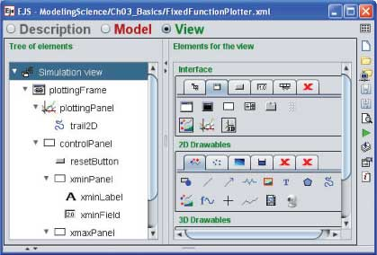

[The Tree of Elements in EJS shows the structure of the Fixed Function Plotter user interface.]
Although it is not necessary to become a Java expert to use EJS, a basic understanding of Java programming concepts and how EJS implements these concepts will help you write clearer, more efficient, and more attractive models. We use a simple function plotter that evaluates a function y = sin(x)/x at 500 points from xmin to xmax to illustrate. This simple model is used to display data generated within the model and you can cut and paste portions of the model from the Tree of Elements (shown in the figure) into your own models when you need to plot data.
The following EJS models demonstrate how to plot functions in EJS. These models are listed in order of complexity.
The Fixed Function Plotter model was created by Wolfgang Christian and Francisco Esquembre using the Easy Java Simulations (EJS) version 4.1 authoring and modeling tool. You can examine and modify a compiled EJS model if you run the model (double click on the model's jar file), right-click within a plot, and select "Open Ejs Model" from the pop-up menu. You must, of course, have EJS installed on your computer. Information about Ejs is available at: <http://www.um.es/fem/Ejs/> and in the OSP ComPADRE collection <http://www.compadre.org/OSP/>.